聚水成塔：古埃及人这样造金字塔？
2015年08月21日
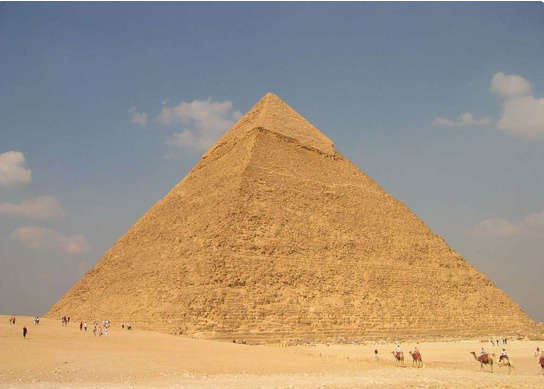
胡夫金字塔是三座金字塔中，最古老也最大的一个，同时也是古代七大奇迹中唯一现存的一个。根据金字塔裡的记 号，这座金字塔是在西元前2580年～前2560年建造的，刚完成时大约高146.59公尺。从古至今，许多人都非常好奇，到底以西元前的技术，是如何盖 出这么厉害的建筑物呢？是外星人的杰作吗？
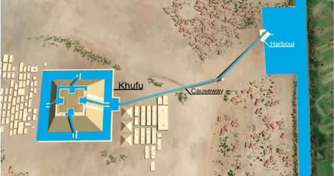
现在有专家表示，在金字塔内部，还留有水道，因此推测，当时在建造金字塔时，除了大量人力外，还在河流与金字塔建地中间，盖了运河，通过水的浮力，运送大约230万块的巨石。
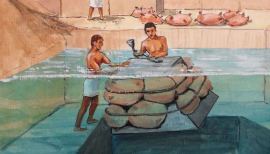
事实上，巨石是从遥远的采石场送过来的。工人利用最原始的材料，也就是羊皮与绳索来做成皮筏，将巨石从河中漂进金字塔里。
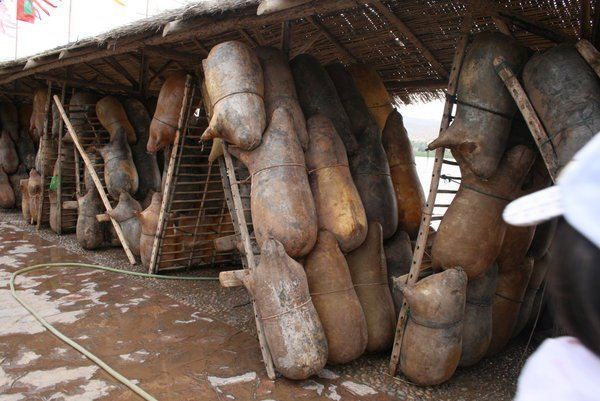
只要将羊皮充满气，就是最简便的漂浮工具，也是古埃及人使用来运送金字塔原料的工具。
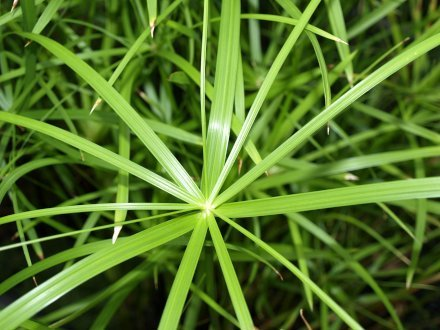
而固定用的绳索的原料，就是从尼罗河旁一种叫纸莎草的植物而来。
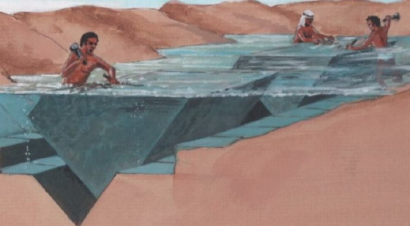
而位于遥远採石场的工人，则利用水里的沟渠，来加工巨石，将它们都变成相同的尺寸。
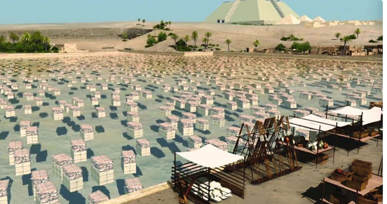
加工完成后，再利用皮筏与运河，将这些巨石都送往金字塔中。
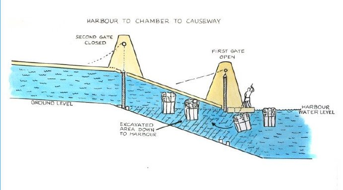
当运到金字塔内部后，聪明的古埃及人还是选择用水来将巨石向上运送。这就非常科学啦！他们有见了许多闸门，将巨石利用浮力向上推挤。
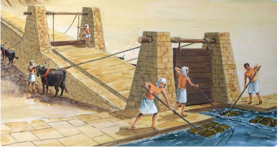
只要水量充足，就会可以省掉很多人力，让大气压力自动运送巨石。
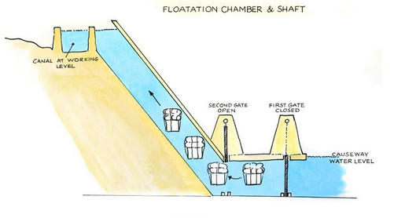
这就像现在的吊车设备，可以直接将巨石送到施工需要的高度与位置。
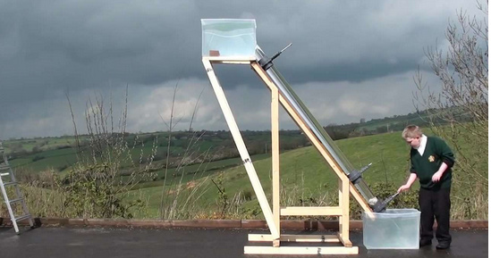
这是一个其实小学生也可以做到的实验，只要浮力可以支撑运送物体的重量，就可以利用浮力将物体向上送了。
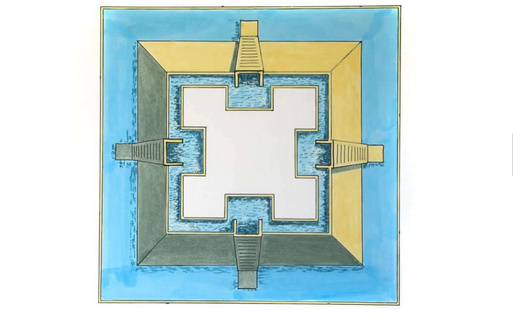
在金字塔的4面，都各自有独立的水道，用来运送巨石。
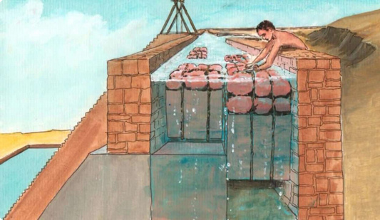
工人只要在预计的施工位置，将巨石从皮筏中取下，就可以省时又省力的将巨石送到对的地方。
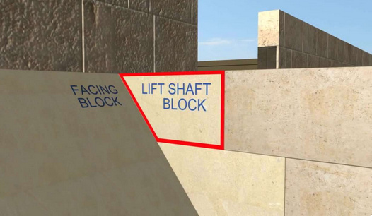
当然水道随着金字塔越建越高，也会跟着往上建造，但都要以一个固定的53度角度来向上建造。
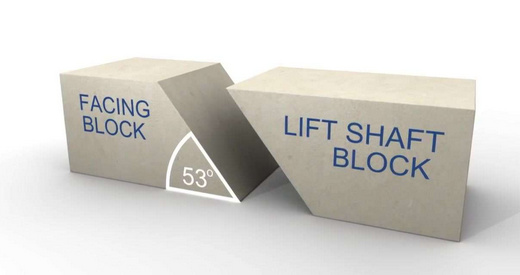
这个角度可是经过计算的，因为这样可以确保水道在不过斜的情况下，继续来运送石块，而金字塔盖好后，4面也都是这个角度。
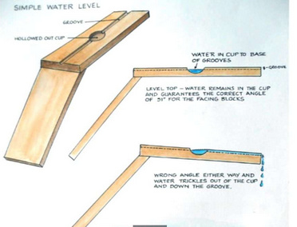
专家推测，古埃及人应该是利用一支53度的水平尺，来确保建造时石块的角度。
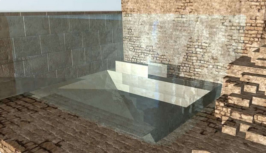
等到金字塔完成后，只要将下方的层层水闸打开，水就会自己流掉。
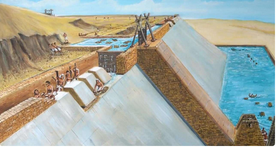
而许多专家也在金字塔上方的巨石上，发现一些河流裡面的物质，可以支持这个水运法的理论。
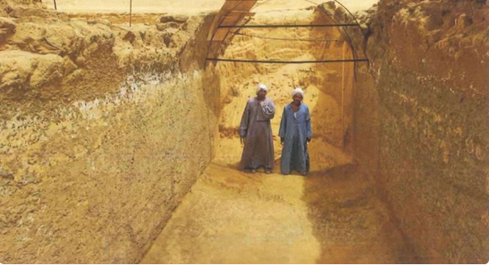
更有力的证据是，在几年前有学者在金字塔里发现水道遗迹。
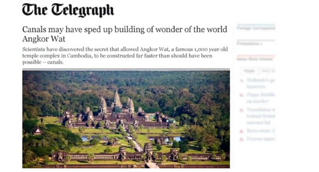
其实在金字塔后，还是有许多知名的大型古建筑，也是用水运法来帮助建造，例如超知名的观光景点：吴哥窟。
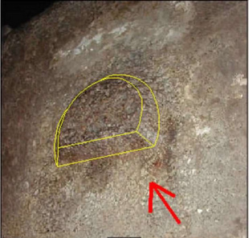
学者也在岩石上，发现了一些突起的部分。
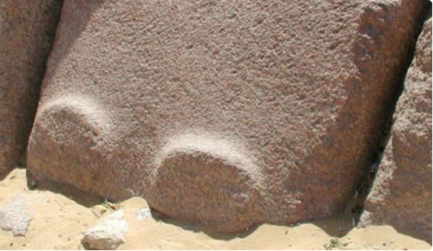
这些根据推测，都是人为的痕迹。
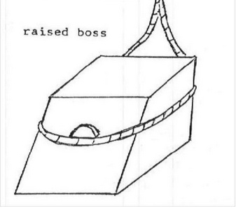
专家研判，这些突起的部分，有可能是为让古埃及人更好固定巨石，有利于运送这些石块。
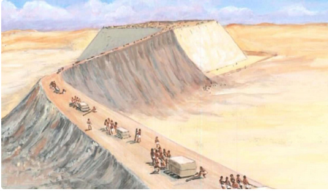
以前希腊人认为，金字塔是由大批奴隶建造而成，但在现代考据后发现，金字塔是由数万名技术纯熟的工人所建造，而这个说法的人力需求较符合水运法的理论。